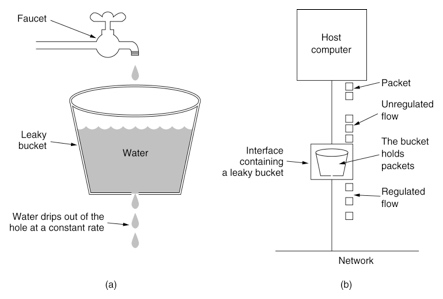
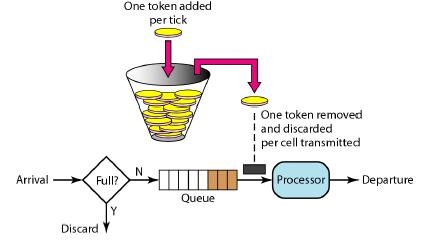

限流算法整理
前言
曾经有个人问：如何给一个系统做流量限制。
大笔一挥：redis记录访问日志，入口控制流量。然后，自我感觉很不好，于是学习相关知识，并整理相关内容。
问题来源
每个API接口都是有访问上限的,当访问频率或者并发量超过其承受范围时候,我们就必须考虑限流来保证接口的可用性或者降级可用性。即接口也需要安装上保险丝,以防止非预期的请求对系统压力过大而引起的系统瘫痪.
限流是一个兜底性的能力，业务不强依赖，所以尽可能的减低成本，但用的时候要保证正常可用。若直接使用Redis来进行限流操作，成本过高，而且增加依赖。市面上主流算法有2类：令牌 OR 漏斗。
主流算法
漏桶算法
漏桶(Leaky Bucket)算法思路很简单,水(请求)先进入到漏桶里,漏桶以一定的速度出水(接口有响应速率),当水流入速度过大会直接溢出(访问频率超过接口响应速率),然后就拒绝请求,可以看出漏桶算法能强行限制数据的传输速率.示意图如下:

可见这里有两个变量,一个是桶的大小,支持流量突发增多时可以存多少的水(burst),另一个是水桶漏洞的大小(rate)，
因为漏桶的漏出速率是固定的参数,所以,即使网络中不存在资源冲突(没有发生拥塞),漏桶算法也不能使流突发(burst)到端口速率.因此,漏桶算法对于存在突发特性的流量来说缺乏效率.
令牌算法
令牌桶算法(Token Bucket)和 Leaky Bucket 效果一样但方向相反的算法,更加容易理解.随着时间流逝,系统会按恒定1/QPS时间间隔(如果QPS=100,则间隔是10ms)往桶里加入Token(想象和漏洞漏水相反,有个水龙头在不断的加水),如果桶已经满了就不再加了.新请求来临时,会各自拿走一个Token,如果没有Token可拿了就阻塞或者拒绝服务.

令牌桶的另外一个好处是可以方便的改变速度. 一旦需要提高速率,则按需提高放入桶中的令牌的速率. 一般会定时(比如100毫秒)往桶中增加一定数量的令牌, 有些变种算法则实时的计算应该增加的令牌的数量.